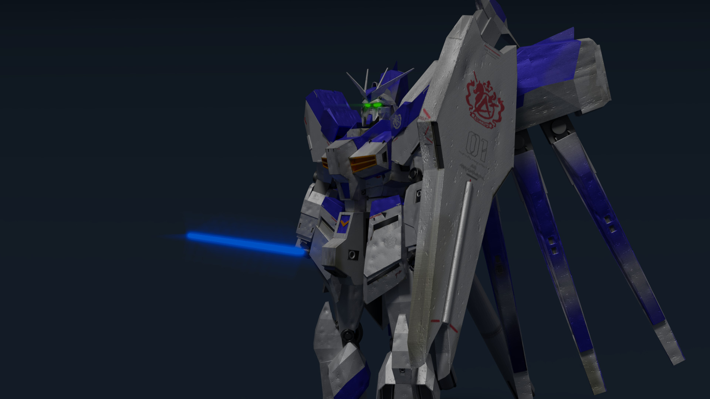

Hi-V ver. 2
Concepts/Software/Languages:
Gundam is a science fiction media franchise that features giant robots (mecha) called mobile suits bearing the name Gundam. It began on April 7, 1979 as Mobile Suit Gundam, a TV series that defined the real robot "mecha" anime genre by featuring giant robots in a militaristic setting. The popularity of the series and its merchandise spawned a franchise that includes television series, OVAs, films, manga, novels and video games.
- source

The RX-93-v2 Gundam, also known as the Hi-V ("Hi-nu") Gundam, is a human-controlled robot from the Japanese Gundam franchise. After my previous attempts to model a gundam in Blender at the request of a friend, I decided to attempt it again with a gundam of their choice (the Hi-V).
I divided the building of the gundam into three parts:
- Modelling. This involved creating each part of the gundam with the right size, dimensions, and position.
- Fine detail/texturing. This entailed Fine tuning some of the parts of the gundam, as well as texture painting, using normal maps, and draing decals on the armor.
- Positioning/composition. This stage was solely for positioning the gundam in a realistic manner and slightly altering textures and materials to fit the mood.
Below are some video links I found useful in the modelling and decal processes:
- 043 - MG RX-93-2 Hi-Nu Gundam Ver.Ka (OOB Review) Pt.1
- 044 - MG RX-93-2 Hi-Nu Gundam Ver.Ka (OOB Review) Pt.2
- MG Hi Nu Ver Ka - 360 Review
- MG Hi Nu Gundam Waterslide Decals Finished
Each texture used 0.06 as the island margin. I additionally packed each texture into the Blender file to reduce any errors caused due to relative links.
For the composition of the scene, I used index material passes for the eye material and beam sword blade material. I added glare and blur nodes to achieve the glowing eye and glowing beam sword effect.
Below is a timelapse of each day of work spent on this gundam.